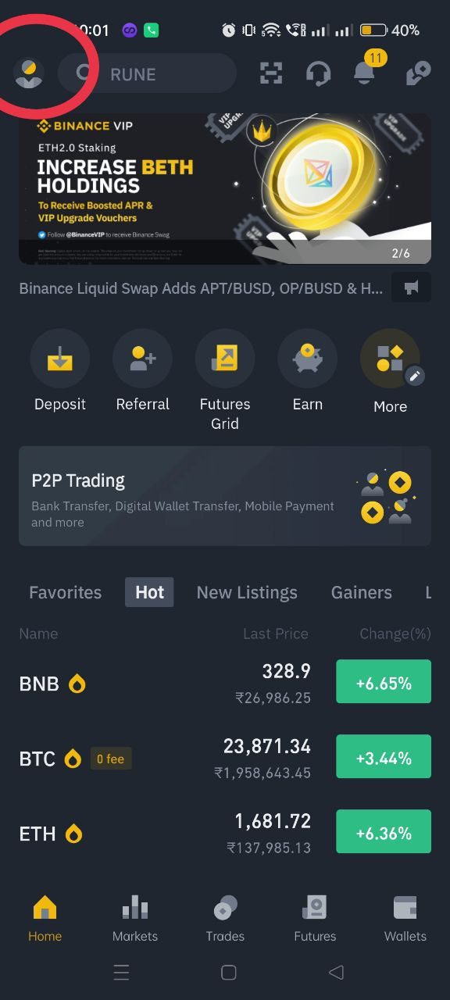
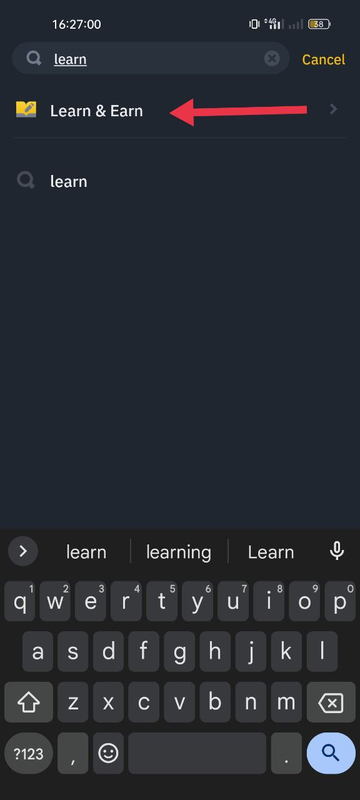

Binance Learn & Earn Quiz Answers | Earn UPTO ₹1000 | SIGNUP | QUIZ ANSWER
Binance learn & earn quiz answers today: Participate in the Binance quiz courses, complete them and earn assured crypto rewards worth up to $10 for free.
Earn free cryptocurrency while learning about them. This a great opportunity for all Binance users, they can build their blockchain knowledge, complete quizzes, and earn free crypto.
There are five new Binance learn and earn quizzes named Solana, Hashflow, Hooked Protocol, BNB, and BUSD quiz that will go live on January 30.
All Binance users with a KYC-verified account can read the lessons, watch videos, and complete quizzes to earn a predetermined amount of SOL, HOOK, HFT, BNB, and BUSD while token supplies last.
The SOL, HOOK, and HFT crypto tokens you receive from quiz will be in a locked state for 150 days. Every user can enjoy 100% APR.
The rewards will be based on a first come first served basis. All Binance learn and earn quiz answers are given below, scroll down to see the answers and start earning free cryptocurrency.
SIGN-UP
1. Click on the button to start SIGN-UP
CLICK ME
2.download the App
3.press on the SIGNUP WITH PHONE OR EMAIL button
4.signup with mobile number or email address
5.Complete The KYC to earn crypto
6.Change account into binance pro

7.activate the Binance pro
How To Take The Binance Quiz?
Note: All KYC-verified Binance users are eligible to win crypto rewards after completing the quiz.
1) Open the Binance app and login to your Binance account.
2.In search bar search Learn

3.Click on the start learning
4.click on the arrow until it reach the last
5.start the quiz
❗❗NOTE:- open the quiz Answers link in other mobile or laptop
if you change the application chance of lossing the quiz ❗ ❗
ANSWERS